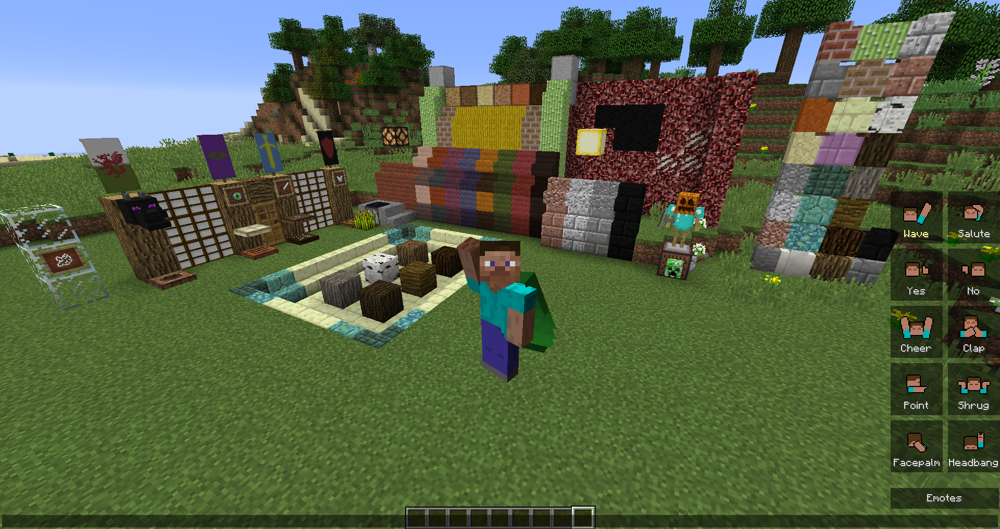

有鉴于此，夸克中的每个特性都小巧而简洁。本模组也因此得名 Quark —— 因为 Quark（夸克）本身也是一种十分小的存在。夸克是模块化模组。这意味着它的特性被分为多个模块。如果玩家需要，所有模块皆可被禁用，所有特性也皆可被禁用。很多特性还有额外的配置选项。
在游戏中，模组特性配置可通过“Mod 选项”菜单访问。大多数特性能在游戏中开关，小部分需要重新加载世界，这取决于玩家改变了选项。任何添加了明确内容（如物品、方块或实体）的特性，需要重新加载世界。
点击不同标签查看模组内容。如果你使用移动设备，你向左滑动然后点击标签来查看更多内容。向下滚动可查看安装说明及其他信息。你可以点击页面顶部的下载按钮下载夸克。
注意本模组的正常运行需要安装 AutoRegLib。（旧版本或许不需要）

安装说明
本模组需要 Minecraft Forge。我们不支持 Bukkit, Spigot, Cauldron, Sponge 或任何其他替代服务端。 虽然有些可能是兼容的，如果你这样做，需要自己处理兼容。模组原样提供，不作任何保证。如果它破坏了你的存档，我们不负责。请始终进行备份。
这只是标准的 Forge Mod 安装过程。如果你已经完成了，可以跳过它。
- 确保你安装了 Minecraft。
- 在这里找到你的目标 Minecraft 版本的 Minecraft Forge。
- 下载 installer-win（或 installer，如果你使用的不是 Windows）并运行。新的 Forge 配置将添加到你的 Minecraft 启动器。
- 点击图片上方的链接下载 AutoRegLib。将下载的 .jar 文件放入你的“mods”文件夹。
- 点击顶部的下载按钮下载夸克。将下载的 .jar 文件放入你的“mods”文件夹。
- “mods”文件夹位于“resourcepacks”文件夹旁边。要找到它，运行新的 Forge 实例，打开“资源包”菜单，打开该文件夹，然后在上一级别到达所有 minecraft 文件所在的位置。“mods”文件夹应该与“screenshots”和“saves”在一起。
- 安装好夸克后运行新的 Forge 配置。
- 按照上述步骤，直到步骤3。在步骤3，选择服务器而不是客户端，并将位置更改为空文件夹。
- 在你选择的空文件夹中创建一个“mods”文件夹，现在加入你的服务器文件。
- 点击图片上方的链接下载 AutoRegLib。将下载的 .jar 文件放入你的“mods”文件夹。
- 点击顶部的下载按钮下载夸克。将下载的 .jar 文件放入你的“mods”文件夹。
- 使用 forge jar 运行服务器。不是 minecraft_server jar
是的，你可以在整合包中使用本模组。
制作人员名单及感谢
- wiiv for most of the textures.
- Rorax for the emote icons.
- cheeserolls for the biome detection code from Biomes'o'Plenty used for Pathfinder Maps.
- DylanKaiser for the inventory chest icon.
- SanAndreasP for the chest textures and most of their code.
- ZeroLevels for the Iron Plate texture.
- Noodlor for the variety dungeon structures.
- Xisumavoid for the sticky piston side texture.
- /u/Soniop for the realistic world preset.
- /u/Martwaza for the trapdoor textures.
- /u/FelitonC and /u/origamidragon412 for the banner textures.
- /u/kopasz7 for the Midori block textures.
- /u/robotthunder500 for the Bookshelf textures.
- /u/darwinpatrick for the Soul Sandstone textures.
- /u/Nyodex for the original Duskbound Block idea and textures.
- /u/MushirMickeyJoe for recreation of the pocket edition piston model.
- /u/CopherSans for the improved bow animation.
- The creators of all the awesome suggestions I found in /r/MinecraftSuggestions and /r/QuarkMod that I implemented here.
- And all the awesome people who pull requested features into the mod, credited in their individual cards.
联系及捐助方式
- 夸克 Subreddit （在这里提建议，请先阅读贴士！）
- 问题反馈 （在这里提交bugs）
- 源码
- 为开发者提供的 APIs
- Vazkii 的 Twitter
- Vazkii 的 Patreon
- wiiv 的 Twitter
- wiiv 的 Patreon
- 捐助
- 电子邮箱及其他联系方式
- vazkii.us